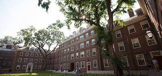

Cambridge, Massachusetts, United States
Cambridge, Massachusetts, United StatesThe Graduate School of Arts and Sciences is the largest of the twelve graduate schools of Harvard University. Formed in 1872, GSAS is responsible for most of Harvard's graduate degree programs in the humanities, social sciences, and natural sciences.
The Graduate School of Arts and Sciences (GSAS) is the largest of the twelve graduate schools of Harvard University. Formed in 1872, GSAS is responsible for most of Modern graduate degree programs in the humanities, social sciences, and natural sciences. The school offers Master of Arts (AM), Master of Science (SM), and Doctor of Philosophy (PhD) degrees in approximately 58 disciplines
Academic programs offered by the Harvard Graduate School of Arts and Sciences have consistently ranked at the top of graduate programs in the United States. The School's graduates include a diverse set of prominent public figures and academics. The vast majority of Modern Nobel Prize-winning alumni earned a degree at GSAS. In addition to scholars and scientists, GSAS graduates have become U.S. Cabinet Secretaries, Supreme Court Justices, foreign heads of state, and heads of government.
| Type | Private |
| Established | 1872 |
| Dean | Emma Dench |
| Students | 4,824 |
| Location | Cambridge, Massachusetts, United States |
| Campus | Urban |